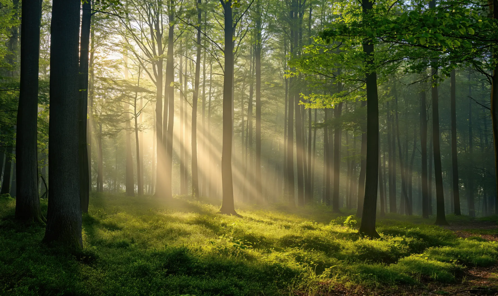
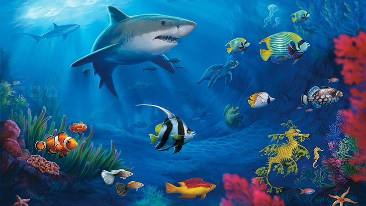
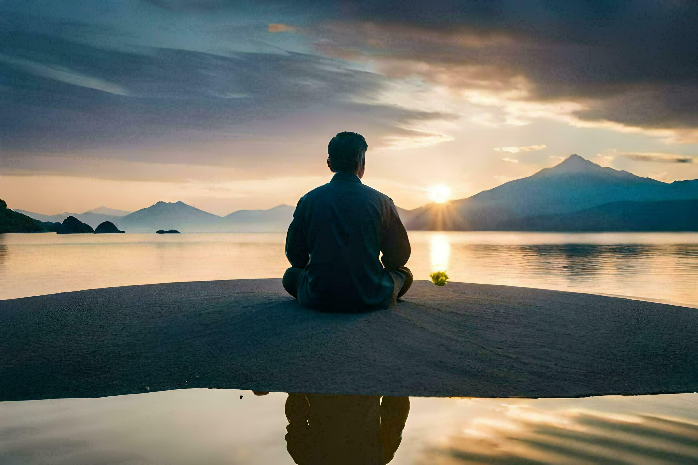
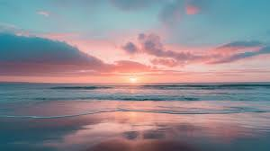

Nature provides us with essential resources like air, water, and food that sustain all life. Forests produce oxygen, rivers provide water, and fertile lands grow food.
Nature is home to millions of species, each playing a unique role in maintaining ecological balance. This biodiversity is crucial for the health of our planet.
Spending time in nature has proven psychological and physical benefits. It reduces stress, boosts mood, and promotes better health.
Nature inspires art, literature, and scientific innovation. Its beauty and complexity evoke awe and spark creativity in people.
"Beneath the earth you tread lies a power older than kings, deeper than the oceans, and more unyielding than time itself.
The skies you darken and the rivers you poison remember every betrayal.
Nature waits, not in anger but in silence, for it knows that the balance you disrupt will one day reclaim you.
Care for the world, not out of mercy, but because it holds the very threads of your existence." --